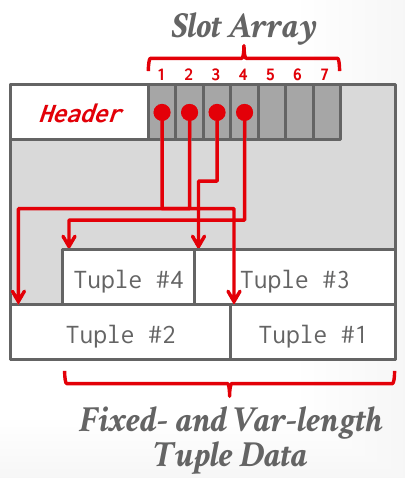
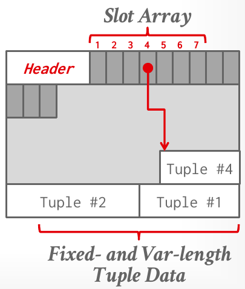
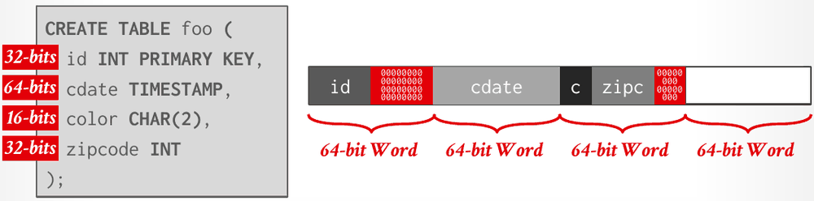
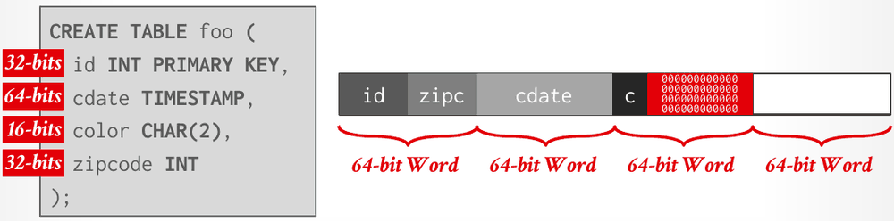

Database Internals in Go · Unit 1 · Lesson 2
Inside a Page: Slotted Pages, Record IDs, and Tuple Layout
How a DBMS arranges tuples inside a page, how a record ID finds one, how a tuple's own bytes are laid out, and where BusTub's table pages differ from the lecture.
Lesson 1 stopped at the page header; this lesson is about what comes after it. The most common layout, the slotted page, copes with two things that a plain append layout can't: deleted tuples and tuples of different lengths. Inside each tuple, the DBMS must also decide the order and alignment of the attributes, how each data type is stored, and what to do with NULLs and with values too big for a page. BusTub's version, TablePage, comes back in Project 3, and the last section lists where it departs from the lecture.
Artist(id PRIMARY KEY, name) holds ids 101, 102 and 103. Album(id PRIMARY KEY, name) holds ids 11, 22 and 33. ArtistAlbum(artist_id REFERENCES Artist(id), album_id REFERENCES Album(id)) is the cross-reference table. Run alone against this state, which INSERT does the DBMS reject?
HW1 builds names with ||. In DuckDB, what does SELECT 'Ken' || ' (' || NULL || ') ' || 'Griffey'; return?
Lesson 1: why do most DBMSs use fixed-size pages rather than variable-size ones?
Three ways to lay out a page
Whatever the file organization, the DBMS must decide how to arrange data inside each page. For now the lecture assumes a row-oriented storage model, where a tuple's attributes are stored together, and that each tuple fits in a single page. Under those assumptions there are three approaches: tuple-oriented storage (this lesson), index-organized storage and log-structured storage (both in Lesson 3). Lesson 4 drops the row-oriented assumption.
The strawman: count and append
The lecture's strawman keeps a count of the tuples in the page and appends each new tuple at the end. Delete tuple #2 from a page holding three tuples and the count drops to 2, leaving a hole between #1 and #3. The next tuple, #4, can go into that hole only if it fits. With variable-length attributes, tuples have different sizes, so a hole may be too small for the next tuple, and a count alone no longer tells the DBMS where each tuple starts.
Slotted pages
The most common layout adds one level of indirection: a slot array that maps each slot number to the offset where its tuple starts. The page header keeps track of the number of used slots and the offset where the last used slot's tuple starts.

To insert, the DBMS writes the tuple just below the previous one, at the back of the page, and appends a slot entry pointing to it at the front. Fixed-length and variable-length tuples coexist, because each slot records exactly where its tuple begins.
The slot array also lets tuples move within the page. When tuple #3 is deleted, its space becomes free, and the DBMS can compact the page: move tuple #4 into that space and update slot 4 to point at the new offset.

Record IDs
The DBMS gives each logical tuple a unique record ID that represents its physical location, for example (file ID, page ID, slot number). Because the slot array absorbs moves within a page, the slot number is a stable name for "this tuple on this page". Most DBMSs don't store the record ID inside the tuple. SQLite is an exception: its ROWID is the true primary key, stored as a hidden attribute. Sizes vary:
| System | Name | Size |
|---|---|---|
| Ingres | TID | 4 bytes |
| PostgreSQL | CTID | 6 bytes |
| SQLite | ROWID | 8 bytes |
| SQL Server | %%physloc%% | 8 bytes |
| Firebird | RDB$DB_KEY | 8 bytes |
| Oracle | ROWID | 10 bytes |
Reading a tuple by its record ID takes three steps: look up the page's location in the page directory, fetch the page from disk if it isn't already in memory, and find the tuple's offset in the slot array. Nothing in a heap is sorted, so to find a tuple by its value the DBMS relies on a separate index.
Applications should never rely on record IDs to mean anything. They are physical, and they change: you'll see below that an update which no longer fits is written to a different page, under a new record ID.
#03 Database Storage I, slides 24–27: the three layout approaches, the strawman, slotted pages (insert, delete, move) and record IDs.
Tuple layout
A tuple is a sequence of bytes prefixed with a header. The DBMS turns those bytes into typed attribute values using the schema information in its catalogs (the metadata it keeps about every table), so the tuple itself carries no schema. The tuple header holds visibility information for concurrency control (which transaction created or modified the tuple; Unit 7) and a bitmap marking which attributes are NULL.
Attributes are usually stored in the order of the CREATE TABLE statement. That's for simplicity; another order might be more efficient. To the DBMS a tuple is just an unsigned char[]: to read an attribute, it computes the attribute's offset and reinterprets the bytes there as the attribute's type, in C++ with reinterpret_cast<int32_t*>(address).
Go has no safe equivalent of reinterpret_cast, and this course doesn't overlay structs on page bytes with unsafe. A page is a []byte, and fields are decoded and encoded with encoding/binary: reading a 4-byte integer at offset off looks like int32(binary.LittleEndian.Uint32(page[off:off+4])). The offsets are the same ones the C++ code computes.
Word alignment
The lecture requires every attribute to be word-aligned, so the CPU can access it without unexpected behavior or extra work. Its example table is foo(id INT, cdate TIMESTAMP, color CHAR(2), zipcode INT), with sizes of 32, 64, 16 and 32 bits. Packed in declaration order, the 64-bit cdate would start halfway through the first 64-bit word and straddle the second. There are two fixes. Padding adds empty bits after attributes so that the next one starts on a word boundary:

id push cdate onto the next word boundary, and more zeros fill out the third word after c and zipc (Lecture #03, slide 34).Reordering changes the physical order of the attributes so that they line up, and may still need padding at the end:

id and zipc share the first word, cdate takes the second, and c plus padding takes the third. The tuple's physical order no longer matches the CREATE TABLE order (Lecture #03, slide 35).How values are stored
- INTEGER, BIGINT, SMALLINT and TINYINT use the native C/C++ format.
- FLOAT, REAL and DOUBLE are variable-precision numbers, stored as IEEE-754. They are fast, because CPUs have instructions and registers for them, but inexact.
- NUMERIC and DECIMAL are fixed-precision numbers with arbitrary precision and scale, used when rounding errors are unacceptable. One implementation is an exact, variable-length binary representation with metadata. PostgreSQL's
numericstores the number of digits, the weight of the first digit, a scale factor, a sign (positive, negative or NaN) and an array of digits. - VARCHAR, VARBINARY, TEXT and BLOB values are stored as a header holding the length, followed by the data bytes, or as a pointer to another page and offset that holds the data. Comparing and sorting them also depends on collations.
- TIME, DATE, TIMESTAMP and INTERVAL values are 32- or 64-bit integers counting micro- or milliseconds since the Unix epoch (1 January 1970).
The lecture's rounding demo runs unchanged in Go, because Go's float32 and float64 are the same IEEE-754 types:
var x, y float32 = 0.1, 0.2
fmt.Printf("x+y = %.20f\n", x+y) // x+y = 0.30000001192092895508
fmt.Printf("0.3 = %.20f\n", 0.3) // 0.3 = 0.29999999999999998890NULLs
The lecture gives three ways to record that an attribute is NULL:
- A null column bitmap in the tuple header, with one bit per attribute. This is the most common approach in row stores.
- A special value reserved to mean NULL for a type, such as
INT32_MIN. This is more common in column stores. - A per-attribute null flag stored next to each value. The lecture says not to do this: the flag needs more than a single bit, because it would otherwise break word alignment.
Values too big for a page
Most DBMSs don't allow a tuple to exceed the size of a page. A value larger than that goes into separate overflow pages, and the tuple stores the value's size and location instead. PostgreSQL's version, TOAST, kicks in above 2 KB; MySQL uses overflow pages for values larger than half a page, and SQL Server for values larger than a page. Some systems can also keep a large value in an external file and treat it as a BLOB (Oracle's BFILE, Microsoft's FILESTREAM). The DBMS can't manipulate the contents of such a file, so it offers no durability or transaction protection for it.
#03 Database Storage I, slides 29–43: tuple headers, word alignment, data representation, the rounding demo, NULLs and large values.
What tuple-oriented storage costs
Lecture #05 revisits slotted pages and follows the writes. To insert a tuple, the DBMS uses the page directory to find a page with a free slot, fetches it, and checks its slot array for space that fits. If there isn't any, it tries another page or creates a new one, then inserts the tuple and updates the slot array. To update a tuple by record ID, it navigates to the tuple as for a read. If the new data fits, it overwrites the old data in place; otherwise it marks the old tuple as deleted and inserts the new version in a different page.
That design has three problems:
- Fragmentation. Pages aren't fully used: deletes leave unusable space and empty slots.
- Useless disk I/O. The DBMS must fetch an entire page to update one tuple.
- Random disk I/O. In the worst case, each tuple an operation updates is on a different page, so updating 20 tuples can mean jumping to 20 places on disk.
Some storage systems (HDFS, Google Colossus, S3 Express) don't allow pages to be overwritten at all, only new ones to be created. Lesson 3 covers log-structured storage, which is designed for such systems, and compares its problems with these.
#05 Database Storage II, "Tuple storage operations" (25:44): inserts and updates on slotted pages. The next chapter, "Limitations of tuple storage" (30:12), covers the three problems.
BusTub's table pages
In Project 3 your executors will read and write tuples through BusTub's TableHeap and TablePage. Their design follows the lecture in outline and departs from it in details that matter when you debug:
| Lecture | BusTub at d49b823 |
|---|---|
| Record ID = (file, page, slot) | RID is a page ID and a slot number only; Get() packs them into one int64 as page_id << 32 | slot_num. |
| Header: number of used slots, offset of the last tuple | An 8-byte header: next_page_id_ (4 bytes), num_tuples_ (2) and num_deleted_tuples_ (2). The tuple data's start is read from the last slot. |
| Slot array maps slot → offset | tuple_info_[]: each entry holds the tuple's offset and size (2 bytes each) and its TupleMeta, 24 bytes per entry in all (TUPLE_INFO_SIZE). |
| Tuple header: visibility and a NULL bitmap | TupleMeta{ts_, is_deleted_} (16 bytes) lives in the slot entry, not in front of the tuple's bytes. There is no NULL bitmap. |
| Data grows from the back; full when it meets the slots | The same: the first tuple goes at 8192 − size, each later one just below the previous. An insert fails when the new tuple's offset would fall below 8 + 24 × (num_tuples_ + 1). |
| Delete, then move tuples to compact | A delete only sets is_deleted_ and counts it. The bytes stay, nothing moves, and slot numbers are never reused. |
| Update: overwrite if it fits, else delete and re-insert | UpdateTupleInPlaceUnsafe accepts only a tuple of exactly the same size and otherwise throws "Tuple size mismatch". |
| Word-aligned attributes | No padding: Schema gives each column the running total of the previous columns' sizes as its offset. |
| VARCHAR: length + bytes, or a pointer | The column's fixed part is a 4-byte offset to [uint32 length][bytes], stored after the fixed part of the same tuple. |
| NULL bitmap (most common in row stores) | Special values: an INTEGER is NULL when it holds INT_MIN (BUSTUB_INT32_NULL), so the smallest storable INTEGER is INT_MIN + 1. |
| Fixed-precision NUMERIC/DECIMAL | DECIMAL is a C++ double: variable precision, inexact. |
| Heap file with a page directory | TableHeap is a linked list of pages through next_page_id_. Inserts go to the last page, and a new page is linked on when the tuple doesn't fit. |
| Overflow pages for large values | None. A tuple that doesn't fit in an empty page fails with "tuple is too large, cannot insert". |
The ASCII diagram at the top of table_page.h still shows 4-byte slot entries. The static_assert below it says 24, and the code is what counts. TupleMeta's timestamp becomes important in Project 4 (MVCC); its comment says to set it to 0 in Project 3.
Work it out: how many tuples fit?
Use BusTub's real numbers: an 8,192-byte page, an 8-byte header, and 24 bytes per slot entry. The table is t(a INT, b BIGINT, c INT), with INT 4 bytes and BIGINT 8 bytes.
-
What to think about
Each tuple costs its own bytes plus one slot entry; the header is paid once. How many bytes is a BusTub tuple of this table, given that BusTub doesn't pad?
The method
The tuple is 4 + 8 + 4 = 16 bytes, with columns at offsets 0, 4 and 12. Each tuple then costs 16 + 24 = 40 bytes, so the capacity is ⌊(8,192 − 8) / 40⌋. Check it against BusTub's insert condition: the k-th tuple starts at 8,192 − 16k, which must not fall below 8 + 24k.
The result
⌊8,184 / 40⌋ = 204 tuples: 204 × 40 = 8,160 ≤ 8,184, but 205 × 40 = 8,200 > 8,184. Note that 24 of every 40 bytes are slot overhead, and that
bsits at offset 4, which isn't a multiple of 8. -
What to think about
Where would
bstart without padding, and which word boundary would it cross? With reordering, which two attributes can share a word?The method
Padding:
aplus 4 bytes of padding fills the first word,bthe second,cplus 4 bytes of padding the third, so the tuple is 24 bytes and costs 48 with its slot. Reordering toa, c, bputsaandcin the first word andbin the second: 16 bytes, no padding.The result
Padding: ⌊8,184 / 48⌋ = 170 tuples (170 × 48 = 8,160; 171 × 48 = 8,208 is too many). Reordering: back to 204, the same as BusTub's unpadded layout, but with every attribute aligned.
-
What to think about
A record ID is (page, slot). Compaction moves bytes; does it touch slot numbers?
The method
In the lecture, slot 3 becomes empty, tuple #4's bytes move into the freed space, and slot 4's offset is updated. In BusTub,
UpdateTupleMetasetsis_deleted_in slot 3'sTupleMetaand incrementsnum_deleted_tuples_, and that's all.The result
Only slot 3 (now empty) and slot 4 (new offset) change, and tuple #4's record ID is (page, 4) before and after. In BusTub nothing moves: slot 3 keeps its offset and size with
is_deleted_set, its bytes stay in the page, and the space isn't reclaimed. That is fragmentation, and a later insert takes a new slot rather than slot 3.
Check your understanding
A slotted page is 4,096 bytes with a 24-byte header. Each slot-array entry takes 4 bytes, and every tuple is exactly 60 bytes. What is the maximum number of tuples the page can hold?
Which statement about record IDs matches the lecture?
HW2 Q1(b): which set lists exactly the problems that CMU's official solution associates with slotted-page storage?
In BusTub's TablePage, what happens when a tuple is deleted?
How does BusTub record that an INTEGER attribute of a tuple is NULL?
Primary sources: CMU 15-445/645 Fall 2025 lecture #03, Database Storage I (slides 24–44, notes §9–12); lecture #05, Database Storage II (slides 13–20, notes §2); Homework #2 Q1(b) and its official solutions; BusTub at commit d49b823: src/include/common/rid.h, src/include/storage/page/table_page.h, src/storage/page/table_page.cpp, src/include/storage/table/tuple.h, src/storage/table/tuple.cpp, src/catalog/schema.cpp, src/include/type/limits.h, src/include/type/value.h, src/type/varlen_type.cpp and src/storage/table/table_heap.cpp.